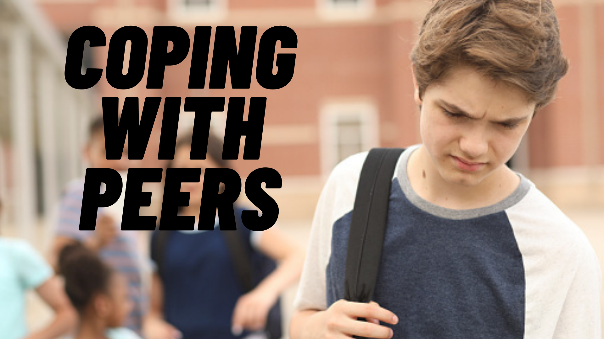

What Is Peer Pressure?
People who are your age, like your classmates, are called peers. When they try to get you to act a certain way, or try to get you to do something, it's called peer pressure.
You might want to be like your peers, even if they’re not pressuring you. It’s natural to want to fit in.
It’s OK to like what your friends and classmates like, or do what they do, as long as it feels right for you, too. But the best thing of all is to be yourself — even if it means being different from your peers.
Why Do Some Kids Give in to Peer Pressure?
Some kids give in to peer pressure because they want to be liked or they think it helps them fit in. Some worry that other kids might tease them if they don't go along with the group. Others go along because they are curious.
Maybe they want to try something that others are doing. They might go along if they think, "Everyone's doing it," even though they know better.
How to Say No to Peer Pressure
1. Know what’s right.
Trust your own feelings about what’s right and wrong. Ask yourself, “Is it the right thing to do?” You probably already know the answer. When you know the right thing to do, it helps you stand firm.
2. Have a friend who will stand with you.
It can really help to have at least one other peer who is willing to say "No," too. This takes a lot of the power out of peer pressure. It's great to have friends who will back you up when you don't want to do something
3. Choose good friends.
You've probably had a parent or teacher say, "Choose your friends wisely." Peer pressure is a big reason why they say this. If you choose friends who don't use drugs, don’t cut class, don’t smoke cigarettes, and don't lie to their parents, then you probably won't do these things either, even if other kids do.
4. Help a friend.
Maybe you notice that a friend is having trouble saying no to peer pressure. You can help by saying, "I'm with you — let's go."
5. Walk away
If you're faced with peer pressure while you're alone, there are still things you can do. You can stay away from peers who pressure you to do stuff you know is wrong. You can tell them, "Nah" and walk away. Better yet, find other friends and classmates to hang around with.
6. Get advice from an adult
If you face peer pressure that’s hard to handle, get advice from an adult you trust. Talk to a parent, teacher, or school counselor. It can help you feel much better. Plus, they can help you prepare for the next time you face peer pressure.
“Stay true to yourself. An original is worth more than a copy.”